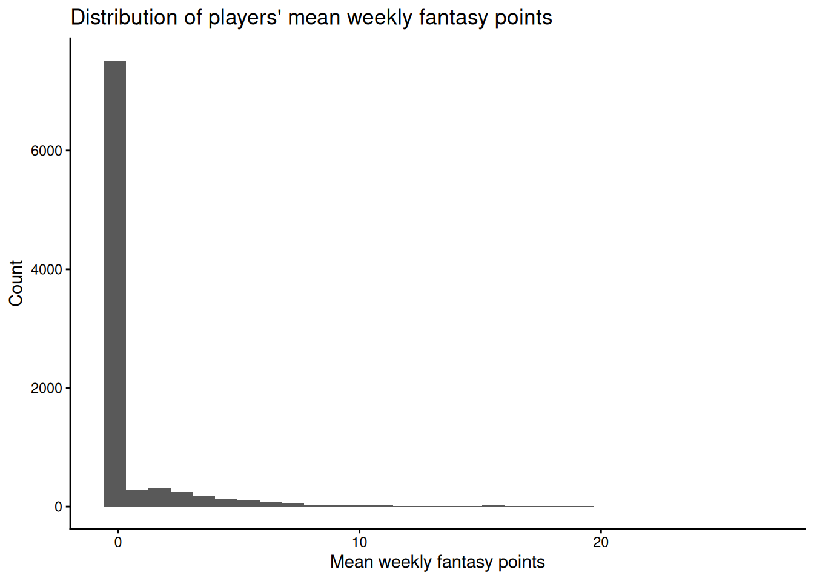
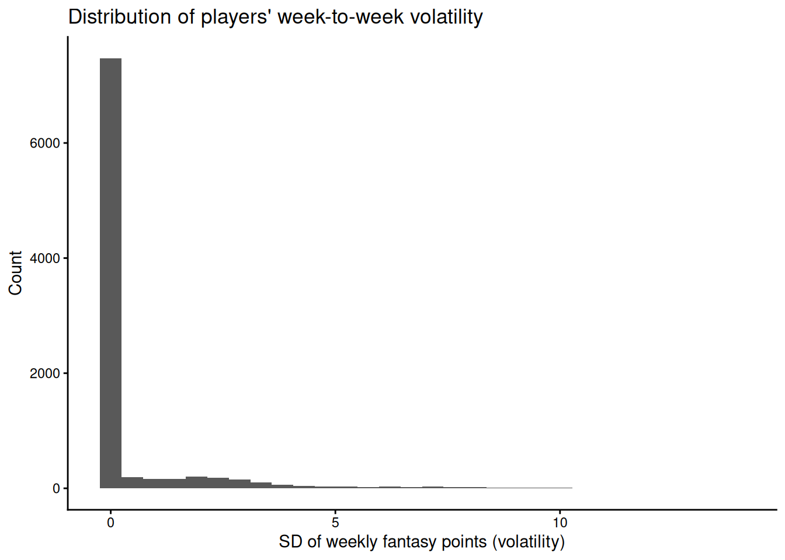
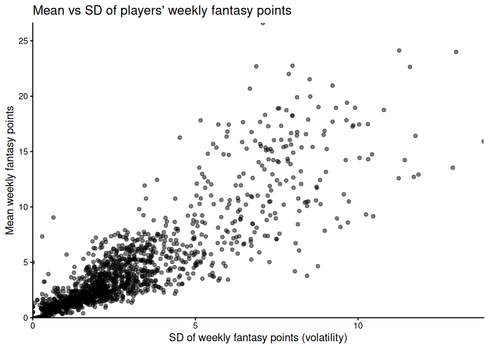
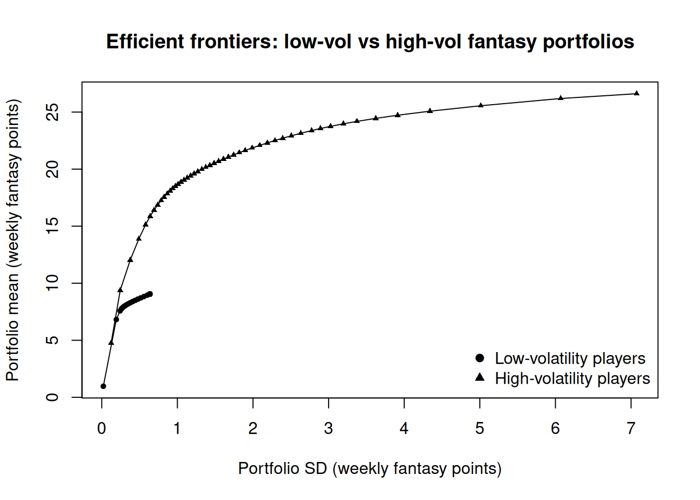

Code
#install.packages("remotes")
#remotes::install_github("DevPsyLab/petersenlab")
#remotes::install_github("FantasyFootballAnalytics/ffanalytics")
#update.packages(ask = FALSE)Jordan Wozniak
November 13, 2025
AI Disclosure: AI was not used.
Link to AI Transcript: not applicable
Background: Competitive fantasy football managers must balance upside and week-to-week risk, but “hot hand” and recency bias can lead them to chase boom-bust players instead of steady scorers.
Method: Using weekly fantasy points from the most recent NFL season, we computed each player’s mean (expected return) and standard deviation (volatility), tested the correlation between them, and then built efficient frontiers for portfolios made from low-volatility vs high-volatility players.
Results: Higher-scoring players tended to be more volatile, and at low and moderate risk levels, portfolios built mostly from low-volatility players achieved similar or higher expected weekly points with clearly lower overall risk than portfolios relying on boom-bust players.
Discussion: Treating week-to-week volatility as portfolio risk suggests that fantasy managers should anchor lineups with consistent players and add only a few risky options, helping reduce the impact of recency bias while still allowing for upside.
Modern Portfolio Theory (MPT) argues that investors should focus on portfolios, not individual assets, and seek the highest expected return for a given level of risk. In fantasy football, managers face a similar problem: they must build a lineup of players whose weekly points are uncertain but can be summarized with an expected value and variability. Some players score fairly consistent points, while others have volatile “boom-bust” weeks. If this in mind, it can help us build stronger lineup and cover up “loose ends.” It may hurt the “high risk high reward” method that people love running, but consistency beats randomness ten times out of ten.
We, or myself, have two questions to pose and would like to seek answers to.
How strongly are players’ historical week-to-week fantasy point related to their historical volatility?
Do lineups that lean more on safer, low-volatility players end up with better risk-adjusted performance than lineups that rely heavily on boom-bust players?
Lineups that rely more on safer, low-volatility players will sit closer to the efficient frontier and have better risk-adjusted performance than lineups that rely heavily on boom-bust players.
When we compare portfolios, teams where most of the total weight is in low-volatility players will have lower overall risk and equal or higher mean fantasy points per week than teams where most of the weight is in high-volatility players.
Modern Portfolio Theory says you can get good returns without taking unnecessary risk by diversifying and avoiding overly volatile assets. In fantasy football, boom-bust players create big swings that can sink a weekly matchup if several bust at once.
All information and guidance of code was provided from “Chapter 20: Modern Portfolio Theory,” link displayed in citations.
We used weekly fantasy scoring data from the most recent NFL season in player_stats_weekly. For each player, we calculated the mean (average weekly fantasy points) and standard deviation (week-to-week volatility) across all games. We then merged in player position and team information from nfl_playerIDs and created descriptive statistics (means, SDs, histograms) for both variables.
Question 1, ran a Pearson correlation between players’ mean points and their SD
Question 2, built portfolios of players to generate efficient frontiers where portfolio return was the weighted mean of weekly fantasy points and portfolio risk was the weighted SD.
player_stats_weekly_recent <- player_stats_weekly %>%
dplyr::filter(season == max(season))
player_stats_weekly_recent_summary <- player_stats_weekly_recent %>%
dplyr::group_by(player_id) %>%
dplyr::summarise(
mean = mean(fantasyPoints, na.rm = TRUE),
sd = sd(fantasyPoints, na.rm = TRUE),
var = var(fantasyPoints, na.rm = TRUE),
.groups = "drop"
)
player_stats_weekly_recent_summary <- player_stats_weekly_recent_summary %>%
dplyr::left_join(
nfl_playerIDs[, c("gsis_id", "name", "merge_name", "position", "team")],
by = c("player_id" = "gsis_id")
) %>%
dplyr::select(name, team, position, player_id, mean, sd, var) %>%
dplyr::arrange(dplyr::desc(mean))
summary(player_stats_weekly_recent_summary$mean) Min. 1st Qu. Median Mean 3rd Qu. Max. NA's
-0.1333 0.0000 0.0000 0.7648 0.0000 26.6106 268 Min. 1st Qu. Median Mean 3rd Qu. Max. NA's
0.0000 0.0000 0.0000 0.4914 0.0000 13.8621 400 Warning: Removed 268 rows containing non-finite outside the scale range
(`stat_bin()`).
Warning: Removed 400 rows containing non-finite outside the scale range
(`stat_bin()`).
Pearson's product-moment correlation
data: mean and sd
t = 237.93, df = 9007, p-value < 0.00000000000000022
alternative hypothesis: true correlation is not equal to 0
95 percent confidence interval:
0.9259472 0.9316182
sample estimates:
cor
0.9288371 ggplot2::ggplot(
data = player_stats_weekly_recent_summary,
ggplot2::aes(x = sd, y = mean)
) +
ggplot2::geom_point(alpha = 0.5) +
ggplot2::coord_cartesian(xlim = c(0, NA), ylim = c(0, NA), expand = FALSE) +
ggplot2::labs(
x = "SD of weekly fantasy points (volatility)",
y = "Mean weekly fantasy points",
title = "Mean vs SD of players' weekly fantasy points"
) +
ggplot2::theme_classic()Warning: Removed 400 rows containing missing values or values outside the scale range
(`geom_point()`).
summary_noNA <- player_stats_weekly_recent_summary %>%
dplyr::filter(!is.na(mean), !is.na(var), var > 0)
sd_median <- stats::median(summary_noNA$sd, na.rm = TRUE)
low_vol_players <- summary_noNA %>% dplyr::filter(sd <= sd_median)
high_vol_players <- summary_noNA %>% dplyr::filter(sd > sd_median)
const_cor <- function(rho, numAssets) {
C <- matrix(rho, nrow = numAssets, ncol = numAssets)
diag(C) <- 1
C
}
sd_low <- low_vol_players$sd
cov_low <- diag(sd_low) %*% const_cor(0, length(sd_low)) %*% diag(sd_low)
efficientFrontier_low <- NMOF::mvFrontier(
low_vol_players$mean, # expected weekly points
cov_low, # risk from historical SD
wmin = 0,
wmax = 1,
n = 50
)
sd_high <- high_vol_players$sd
cov_high <- diag(sd_high) %*% const_cor(0, length(sd_high)) %*% diag(sd_high)
efficientFrontier_high <- NMOF::mvFrontier(
high_vol_players$mean,
cov_high,
wmin = 0,
wmax = 1,
n = 50
)
plot(
efficientFrontier_low$volatility,
efficientFrontier_low$return,
type = "o",
pch = 19,
cex = 0.6,
xlab = "Portfolio SD (weekly fantasy points)",
ylab = "Portfolio mean (weekly fantasy points)",
main = "Efficient frontiers: low-vol vs high-vol fantasy portfolios",
xlim = range(c(efficientFrontier_low$volatility,
efficientFrontier_high$volatility)),
ylim = range(c(efficientFrontier_low$return,
efficientFrontier_high$return))
)
lines(
efficientFrontier_high$volatility,
efficientFrontier_high$return,
type = "o",
pch = 17,
cex = 0.6
)
legend(
"bottomright",
legend = c("Low-volatility players", "High-volatility players"),
pch = c(19, 17),
bty = "n"
)
Graph 1: Most players have very low average points
Graph 2: Most players also have very low volatility, with a long right tail of players whose scores swing a lot from week to week.
Graph 3: The scatterplot shows a strong upward trend: players who score more on average also tend to have higher week-to-week SD.
Graph 4: At low levels of portfolio SD, on the left side, portfolios built from low-volatility players achieve similar or higher mean points than those built from only high-volatility players.
These findings mostly support our hypothesis that fantasy teams built mainly from consistent, low-volatility players can perform better for their level of risk than teams that rely heavily on boom-bust players. The strong positive relationship between mean points and volatility means that chasing high scorers often also means accepting more week-to-week swings. However, when we look at the efficient frontiers, the low-volatility portfolios give good average points with much lower overall risk, especially in the low-risk region where most fantasy managers probably want to be.
Strengths: This project uses real weekly fantasy data from an entire NFL season and applies a well-established framework to evaluate lineups, rather than relying on anecdotes.
Limitations: There are outside “affectant” or plural, if you may, that can hurt this portfolio. This can’t be directly analyzed from the graphs and code in general, but injuries and outside factors like coaching decisions, psychology of teams, and other factors that may not be football related. This can turn a consistent player into a inconsistent, but this can be said about anyone at anytime, so that is the added risk and limitation that sits inside these studies.
In this article, we used historical week-to-week fantasy scores to treat players as financial assets and quantify risk as volatility. Our results showed a strong positive relationship between players’ average weekly points and their volatility, and efficient frontier comparisons suggested that lineups built mostly from safer, low-volatility players offer better risk-adjusted performance at low and moderate risk levels than lineups that rely heavily on boom-bust players.
In my eyes, this is a great study to run for competitive fantasy football managers. Sure, we may want the top players per week, but sometimes that can be a random player. There are some names out there that we never heard of, and come out the woodwork and score 40+ points, then we pick them up for the boom, and then become a dud for the rest of the season. This, in turn, removes the “hot hand” and the “recency bias.” If you have a guranteed 15 points, versus a chance of getting 30, you would still choose the 15, that’s an average 130 points to your team. This would follow the “boom-bust” idea, but we need the steady idea.
https://isaactpetersen.github.io/Fantasy-Football-Analytics-Textbook/modern-portfolio-theory.html#sec-modernPortfolioTheoryGettingStarted
https://eng.wealthfront.com/2012/01/17/moneyball-using-modern-portfolio-theory-to-win-your-fantasy-sports-league/
https://bleacherreport.com/articles/44987-measuring-week-to-week-consistency-with-standard-deviation
R version 4.5.2 (2025-10-31)
Platform: x86_64-pc-linux-gnu
Running under: Ubuntu 24.04.3 LTS
Matrix products: default
BLAS: /usr/lib/x86_64-linux-gnu/openblas-pthread/libblas.so.3
LAPACK: /usr/lib/x86_64-linux-gnu/openblas-pthread/libopenblasp-r0.3.26.so; LAPACK version 3.12.0
locale:
[1] LC_CTYPE=C.UTF-8 LC_NUMERIC=C LC_TIME=C.UTF-8
[4] LC_COLLATE=C.UTF-8 LC_MONETARY=C.UTF-8 LC_MESSAGES=C.UTF-8
[7] LC_PAPER=C.UTF-8 LC_NAME=C LC_ADDRESS=C
[10] LC_TELEPHONE=C LC_MEASUREMENT=C.UTF-8 LC_IDENTIFICATION=C
time zone: UTC
tzcode source: system (glibc)
attached base packages:
[1] stats graphics grDevices utils datasets methods base
other attached packages:
[1] knitr_1.50 lubridate_1.9.4 forcats_1.0.1 stringr_1.6.0
[5] readr_2.1.6 tibble_3.3.0 tidyverse_2.0.0 effectsize_1.0.1
[9] gpboost_1.6.4 R6_2.6.1 LongituRF_0.9 yardstick_1.3.2
[13] workflowsets_1.1.1 workflows_1.3.0 tune_2.0.1 tidyr_1.3.1
[17] tailor_0.1.0 rsample_1.3.1 recipes_1.3.1 purrr_1.2.0
[21] parsnip_1.3.3 modeldata_1.5.1 infer_1.0.9 ggplot2_4.0.1
[25] dplyr_1.1.4 dials_1.4.2 scales_1.4.0 broom_1.0.10
[29] tidymodels_1.4.1 powerjoin_0.1.0 missRanger_2.6.1 future_1.68.0
[33] petersenlab_1.2.2
loaded via a namespace (and not attached):
[1] RColorBrewer_1.1-3 rstudioapi_0.17.1 jsonlite_2.0.0
[4] datawizard_1.3.0 magrittr_2.0.4 TH.data_1.1-5
[7] estimability_1.5.1 farver_2.1.2 nloptr_2.2.1
[10] rmarkdown_2.30 vctrs_0.6.5 minqa_1.2.8
[13] base64enc_0.1-3 htmltools_0.5.8.1 Formula_1.2-5
[16] parallelly_1.45.1 htmlwidgets_1.6.4 sandwich_3.1-1
[19] plyr_1.8.9 zoo_1.8-14 emmeans_2.0.0
[22] lifecycle_1.0.4 pkgconfig_2.0.3 Matrix_1.7-4
[25] fastmap_1.2.0 rbibutils_2.4 digest_0.6.39
[28] colorspace_2.1-2 furrr_0.3.1 Hmisc_5.2-4
[31] labeling_0.4.3 latex2exp_0.9.6 randomForest_4.7-1.2
[34] RJSONIO_2.0.0 timechange_0.3.0 NMOF_2.11-0
[37] compiler_4.5.2 withr_3.0.2 htmlTable_2.4.3
[40] S7_0.2.1 backports_1.5.0 DBI_1.2.3
[43] psych_2.5.6 MASS_7.3-65 lava_1.8.2
[46] tools_4.5.2 pbivnorm_0.6.0 foreign_0.8-90
[49] future.apply_1.20.0 nnet_7.3-20 glue_1.8.0
[52] quadprog_1.5-8 nlme_3.1-168 grid_4.5.2
[55] checkmate_2.3.3 cluster_2.1.8.1 reshape2_1.4.5
[58] generics_0.1.4 gtable_0.3.6 tzdb_0.5.0
[61] class_7.3-23 hms_1.1.4 data.table_1.17.8
[64] pillar_1.11.1 mitools_2.4 splines_4.5.2
[67] lhs_1.2.0 lattice_0.22-7 survival_3.8-3
[70] tidyselect_1.2.1 mix_1.0-13 reformulas_0.4.2
[73] gridExtra_2.3 stats4_4.5.2 xfun_0.54
[76] hardhat_1.4.2 timeDate_4051.111 stringi_1.8.7
[79] DiceDesign_1.10 yaml_2.3.10 boot_1.3-32
[82] evaluate_1.0.5 codetools_0.2-20 cli_3.6.5
[85] rpart_4.1.24 xtable_1.8-4 parameters_0.28.2
[88] Rdpack_2.6.4 lavaan_0.6-20 Rcpp_1.1.0
[91] globals_0.18.0 coda_0.19-4.1 parallel_4.5.2
[94] gower_1.0.2 bayestestR_0.17.0 GPfit_1.0-9
[97] lme4_1.1-37 listenv_0.10.0 viridisLite_0.4.2
[100] mvtnorm_1.3-3 ipred_0.9-15 prodlim_2025.04.28
[103] insight_1.4.2 rlang_1.1.6 multcomp_1.4-29
[106] mnormt_2.1.1